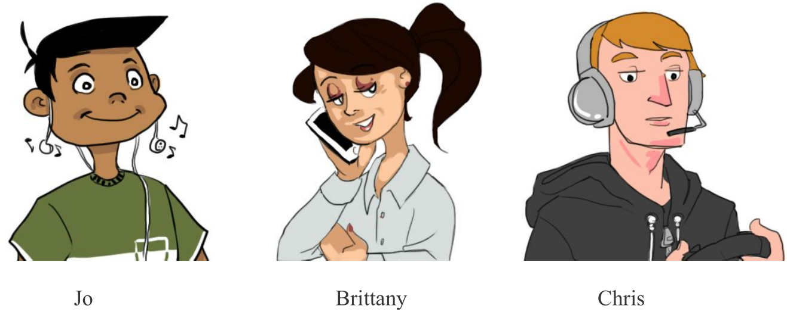

API Tutor
Brief
To create a tool that allows for easy exploration of more advanced programming topics for interested students.
The Challenge
Learning how to code is becoming increasingly invaluable to have as a skill. There are many resources that cater to newcomers to programming in order to elevate themselves to a proficient level. Unfortunately, after programmers have exhausted through intro level tutorials and want to cover more advanced topics that take advantage of the web, there is a dearth of resources that resonate with them. Many of these more advanced tutorials expect a higher level of understanding, or do not introduce the topic in a way that is engaging enough for a newer programmer.
Our Solution
We designed a tool that would allow students to explore the world of APIs in an gamified and interactive fashion. Our design approach is innovative in that it took into consideration, early on, values our users cherish. We conducted user tests with our various prototypes, and collected terminal feedback via a survey, gauging usefulness of our product, the ease with which they could explore the material, and the overall success of conveying the educational material.
Design Process
Contexual Inquiries
Our group elected on a top-down approach in conducting our inquiries, such that we first surveyed the group as a whole for their highest ranked personal values. We then broke them up into smaller focus groups, discussing which websites conveyed values they agreed with, and why. Finally, we focused on select individuals as they interacted with tutorial interfaces already in existence, noting their frustrations, side-comments, and displayal of relief.
Persona and Storyboard creation
Based on the select indiviuals we came up with the following personas and scenarios:

Below depicts a scenario that one of the students might experience while attempting to learn more about APIs. It walks through the frustration and the 'aha' moment of setting up the workspace.
Low-Fidelity Prototype
In starting to create our paper prototype, there was a vague idea of the information architecture and general layout of the application. This made it easy to shape the outline of the basic prototypes.
One of the difficult aspects of the prototyping was that it forced us to think about the smaller interactions that the user would use to navigate through the application. When thinking globally, it was easier to separate modules spatially on the page, but when it came down to thinking of how users would interact within these modules, it was more difficult to discern.
High-Fidelity Prototype
We decided to build our prototype on Framer Studio. We chose Framer Studio since it allows for a genuine sense of interactivity and high fidelity to come across. It made experiencing the flow of the interaction very explicit and deliberate, and allow the developer to question whether it makes sense or feels unnatural — a judgment that the user of the prototype is later able to make, as well. Below is a gif of our prototype:
Final Prototype
As we experimented with our high fidelity prototype using Framer Studio, we realized that we could build a better user-friendly prototype using HTML, CSS and, JavaScript. This allowed us to create a major overhaul of the visual design and functionality in our final prototype. When compared to our high fidelity prototype, our final prototype design was easier to iterate and improve upon.

We conducted user testing of our final prototype and asked our users to fill a survey.
Most students understood the general idea of what they had to do, once they were presented with the application. The ordering made logical sense, and our navigation was intuitive enough to have no problem moving through the program. When a student was stuck, it was overwhelmingly due to not reading the instructions beforehand and attempting to infer what they had to do based on the interface alone. It was common to hear a gasp when a student finally understood the instructions after reading them. It’s possible the text instructions were not seen as a central aspect of the user interface, or at least necessary for them to proceed through the steps.
Our survey was primarily used gauge coding literacy, we asked how long students spent a week coding in any particular language. We discovered that:
Final Reflection
From the feedback we recieved, we infer that while API Tutor provided a helpful platform in engaging with APIs in an inviting way, it is far from being a refined educational tool. So, with the objective of designing a user interface that is easy to use and engaging, our team feels as though API Tutor was successful.
Users of API Tutor are likely motivated to learn how to use one or more APIs in order to add functionality to their own projects or web pages. We observed how compelling it would be to add an Export Code option at the end of lessons, and ultimately smooth the transition from this learning environment to real life. We expect that the feeling of accomplishment in generating and understanding usable code would serve as encouragement for beginners and the added functionality of being able to extract and customize raw code would be appealing to experienced users.
Future experiments could include testing the effectiveness and ease of use of our application compared with Code Academy’s API lessons. We could also compare the relevance of API Tutor in a classroom setting versus an individual using API Tutor at home.